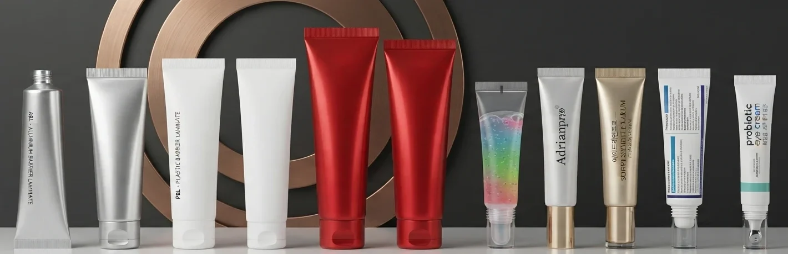

Products내용물에 맞는 튜브를
내용물에 맞는 튜브를
설계하고 생산합니다
산소·수분·빛을 차단해야 하는 기능성 화장품부터 제약용 연고까지. 차단 성능과 직경을 제품에 맞춰 제안합니다.


Why Adrianpro모든 튜브를
모든 튜브를
같은 품질로
튜브 성형부터 숄더 사출, 캡핑·실링까지 한 라인에서 끝냅니다. 공정마다 비전 검사를 두고 불량 데이터를 MES로 집계해 원인을 추적합니다.
고속 전자동 라인
튜브 웰딩·커팅, 숄더 사출·접합, 캡핑·알루미늄 실링을 연속 자동화했습니다.
인라인 비전 검사
인쇄·이물·융착, 숄더 미성형·표면 결함을 생산 중 실시간으로 걸러냅니다.
MES 품질 추적
불량 수량과 공정 데이터를 자동 집계해 로트별 이력을 추적합니다.
제약 수준 품질관리
자재 수입검사부터 공정·출하검사, 부적합 시정조치(CAPA)까지 표준 절차로 관리합니다.
Applications
어떤 내용물이든,
어떤 내용물이든,
맞는 튜브가 있습니다
내용물의 점도, 유효 성분, 사용 방식에 따라 라미네이트 구조를 설계합니다.
- 기능성 크림·아이크림 — 레티놀, PDRN 등 산화에 민감한 성분 보호
- 제약용 연고·외용제 — 제약 수준의 위생·품질 관리 체계
- 선케어·클렌징·핸드크림 — 대량 생산에 맞춘 고속 라인
ABL LAMINATE · CROSS-SECTION (예시)
외층 · 인쇄면
접착층
알루미늄 배리어
접착층
내층 · 내용물 접촉면
OEM Process
문의부터 출하까지
사양 협의, 디자인 교정, 샘플 승인을 거쳐 양산합니다. 단계마다 담당자가 일정을 공유합니다. 자세히 보기 →
상담·사양 협의
내용물, 직경·용량, 수량, 납기 확인
디자인·인쇄 교정
인쇄 데이터 검토와 색상 교정
샘플 승인
샘플 제작 후 고객 승인
양산·검사
인라인 비전 검사와 공정 검사
출하
출하 검사 후 성적서와 함께 납품
새 제품의 튜브를 준비하고 계신가요?
사양이 정해지지 않았어도 괜찮습니다. 내용물과 목표 수량만 알려주시면 맞는 구성을 제안해 드립니다.